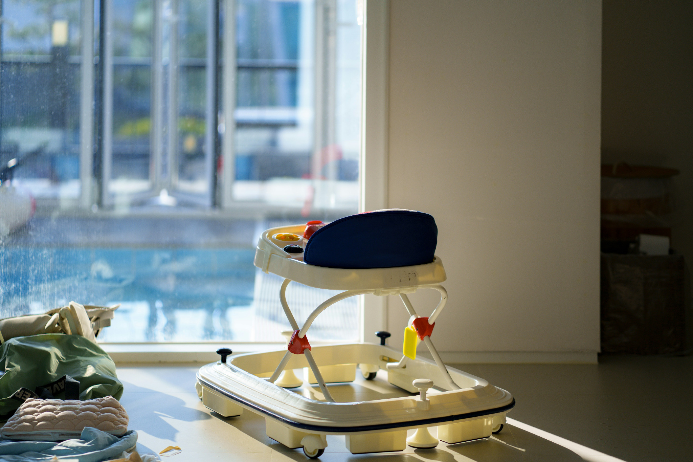

♡
Postpartum Support
Gentle, practical support for mothers as they recover, rest and adjust to life with a new baby.
Explore →POSTPARTUM • NEWBORN • FAMILY CARE
Thoughtful, in-home support for mothers, newborns and families during the tender transition into parenthood.

THE NURTURE NEST PHILOSOPHY
We create calm, practical space for families to recover, bond and find their rhythm — with trusted support in the comfort of home.
OUR SERVICES
From the first nights home to the moments when you simply need another pair of capable hands.
Gentle, practical support for mothers as they recover, rest and adjust to life with a new baby.
Explore →
Confident assistance with feeding routines, settling, bathing, nappy changes and everyday newborn care.
Explore →
Reliable, attentive childcare at home — from a few hours of breathing room to a full day of care.
Explore →CURATED CARE
Simple packages designed around the reality of family life. Custom support is available when you need something different.
A gentle beginning
3 home visits · 6 hours
For the first few weeks
5 visits · 15 hours
Comprehensive support
10 visits · 30 hours

OUR APPROACH
Nurture Nest is built around a simple idea: new families deserve support that is warm without being intrusive, capable without being clinical, and practical without losing the human touch.
We meet families where they are — in their homes, in their routines and in those beautifully messy first months.
IN-HOME CHILDCARE
For date nights, appointments, work commitments, errands or simply an afternoon to breathe.
Book childcare →QUESTIONS, ANSWERED
As early as you'd like. Booking before your due date gives us time to understand your family and plan your support.
Yes. Overnight support can be arranged depending on availability and your family's needs. Ask us for a tailored quote.
Absolutely. Every family is different, so we can build a support plan around your hours, children and priorities.
Nurture Nest provides non-medical family and childcare support. Our services do not replace a doctor, midwife, nurse, lactation consultant or other healthcare professional.
LET'S CREATE YOUR SUPPORT PLAN
Tell us what your family needs. We'll help you find the right level of support.
Start an enquiry →